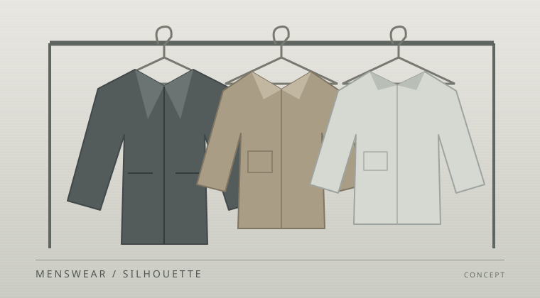
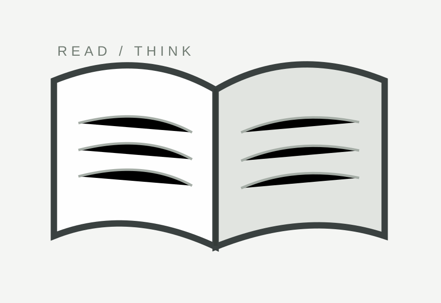

BACKGROUND / LIFE & WORK
經歷，不只是履歷
台北人，曾赴日本留學一年。加入 Panasonic 後，先後接觸電材、開發及建築系統商材。每個部門都有不一樣的工作方式與收穫。
點選工作領域，看看我接觸過的商品與工作
03 / SYSTEM SOLUTIONS
系統商材｜現在的工作
目前主要負責 F2W、HA、電子鎖等建築系統商材，連結日本 BU、代理店與專案現場。比起單一商品，更需要把技術、商業條件與實際使用情境一起考量。
JAPAN / STYLE / EVERYDAY
男裝收藏（示意） 
皮革包款
閱讀與思考BOOKS / IDEAS
居家空間SPACE / ORDER
生活中喜歡的事
日本旅行、男裝包款、閱讀、運動與居家美感；有些興趣只是欣賞，有些則忍不住想親自動手研究。

SELECT ROOM / JAPANESE AESTHETICS
個人選物室
01 / MENSWEAR
男裝
喜歡觀察服裝的剪裁、輪廓與低彩度配色。
READING / THINKING
閱讀與思考
閱讀不只是累積知識，也是持續修正自己理解世界的方式。
點開感興趣的主題
日本與選物SELECT ROOM
特別喜歡逛日本的百貨公司、伊勢丹與 Outlet。看男裝、包款與鞋款，也欣賞店內陳列、街景與城市的生活氣氛。
閱讀與思考BOOKS / IDEAS
喜歡《人類大歷史》《人類大命運》《恆毅力》《刻意練習》《原則》《黑天鵝》等書；最近在讀《快思慢想》。
運動習慣ROPE / CORE
喜歡跳繩與核心訓練，也曾長期追蹤自己的運動成果。重視的是持續與自我調整，而不是單次表現。
居家空間SPACE / ORDER
會自己研究 SUS 架配置、收納、配色與家具貼皮改造。希望空間即使不大，也能有秩序、質感與舒服的氣氛。
DESIGN / SPACE / BUILD
從想法，做到實際使用
從小畫家繪圖、包裝設計，到 SUS 架規劃與空間改造。比起只欣賞作品，我更喜歡自己思考「能不能真的做出來」。
點選作品觀看放大說明，可左右切換
※ 目前為示意圖；待你提供原始照片後改成真正的個人作品展。
TOOLS / EXPERIMENTS / SYSTEMS
AI LAB
AI 對我而言不只是聊天或產生圖片，而是把原本覺得有趣、想改善的事情，試著做成可以操作的工具。
選擇一個專案，看看我為什麼想做它
01 / BUSINESS × AI
債權主檔
將分散的債權資訊、額度條件與出貨前檢核整合在同一個管理架構。對我而言，AI 的價值之一，是讓繁雜的工作更容易被確認與追蹤。
※ 僅介紹個人專案概念，不公開公司內部資料。
TRAVEL LOG / WORLD ATLAS
我的世界足跡
09DESTINATIONS
TRAVEL NOTES / 旅途隨想
從台北出發
旅行不只是走訪不同地方，也是換個角度看城市、建築與生活。選擇左側的目的地，看看不同地方值得觀察的風景。
移動小飛機或點選地區。虛線為足跡示意，非實際航班。
TRAVEL PREFERENCES
我的旅行方式
比起走遍所有景點，更喜歡按照自己的步調，觀察不同城市的日常。
EXPLORATION / IDEAS / UNKNOWN
對未知保持好奇
除了工作與生活，也喜歡探索陌生的事物與尚未找到答案的問題。
THE UNKNOWN
未知領域
對還沒有答案的問題保持好奇。從陌生知識開始，逐步理解原理、證據與仍待解答的部分。
※ 部分生活圖片與作品仍為示意插畫，將逐步替換成個人實際照片。